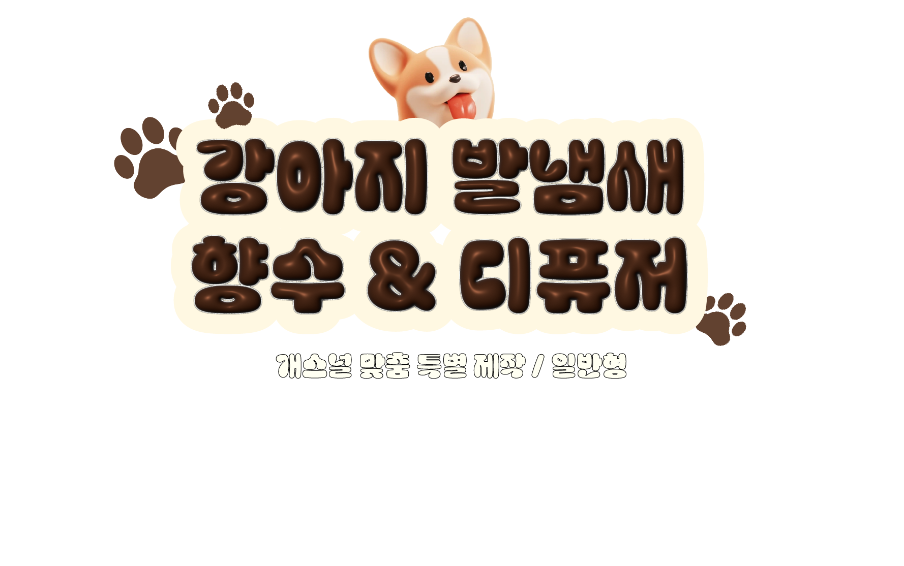
마음이 편안해지는 우리집 강아지 발냄새...
강아지가 없을 때도 맡고 싶다면?
본가를 떠나 자취방에 갔는데 우리집 강아지가 너무 보고싶을 때
심신의 안정을 위하여 집 안 전체에 향기로운 강아지 발냄새가 필요할 때
강아지가 없는 여행을 떠났는데 내가 분리불안이 올 때
강아지와 함께하는 느낌을 받고 싶은 언제 어디서든
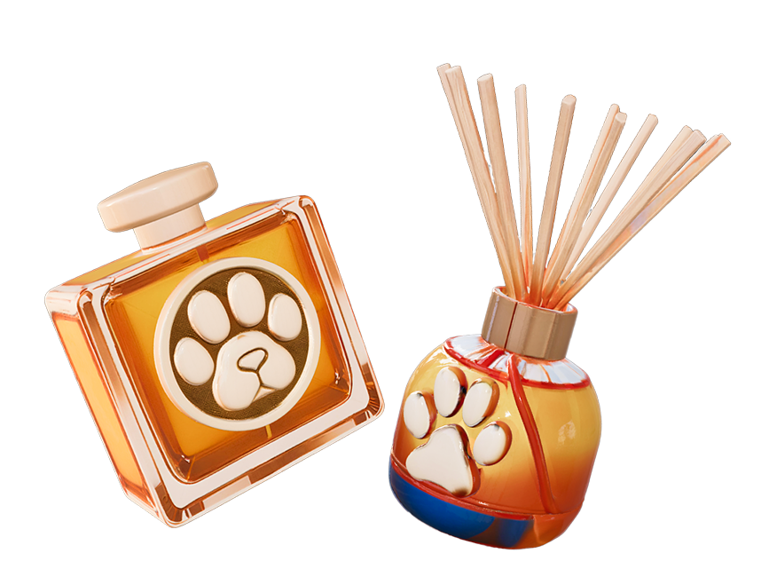
강아지 발냄새 향수 & 디퓨저와
함께해보세요!
제각기 다른 체취에 맞춘
특별한 개스널 맞춤 제작
강아지들은 제각기 다른 체취를 가지고 있기 때문에 발냄새 역시 강아지마다 조금씩 다른, 고유의 향을
가집니다. 아이들을 사랑하는 견주들은 이 차이를 못 알아챌 수가 없죠. 다른 강아지말고, 오직 '우리 집'
강아지 '별이', '뽀또'의 발냄새를 맡고 싶은 견주들을 위해 발냄새 향수 & 디퓨저는 체취 분석 키트를
통하여 개스널 맞춤형 향수와 디퓨저를 제공합니다.
맞춤 제작 향수 & 디퓨저 주문 과정
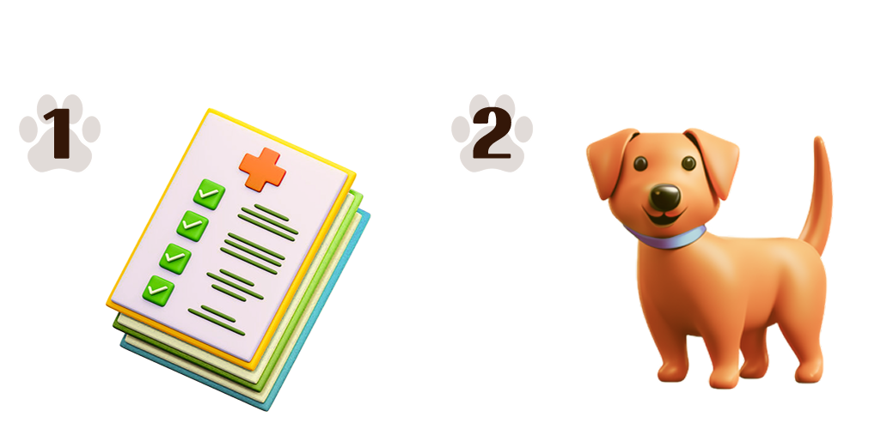
구성품: 전용 무향 패드, 지퍼백, 체취 수집 설명서, 체취
기록 카드, 반송 봉투
산책 후 10~20분 이내, 패드로 발을 부드럽게 닦은 후 하루 이상
밀봉해 실온 보관 후 회수 (향수, 디퓨저 수집 방법 상이)
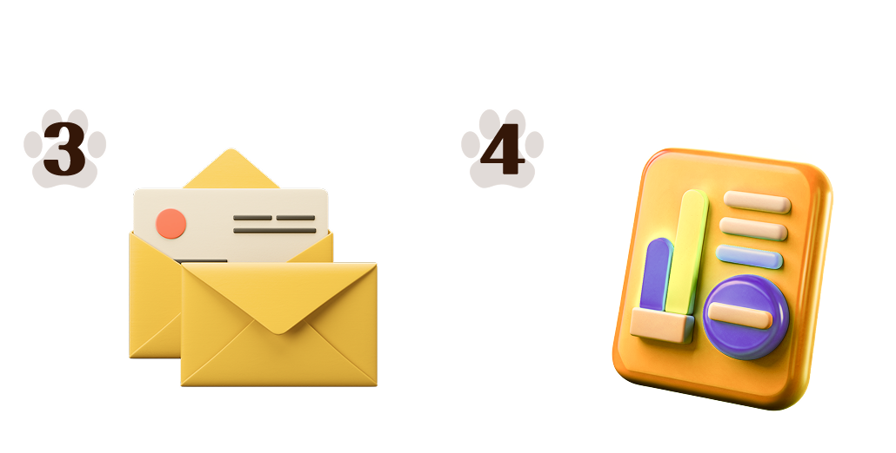
반송 봉투에 기재된 주소 확인
체취 분자 성분 분석(GC-MS), VOC 센서 기반 스캐닝,
AI 향기 매칭 알고리즘 과정을 거치는 전문적인 제작 과정
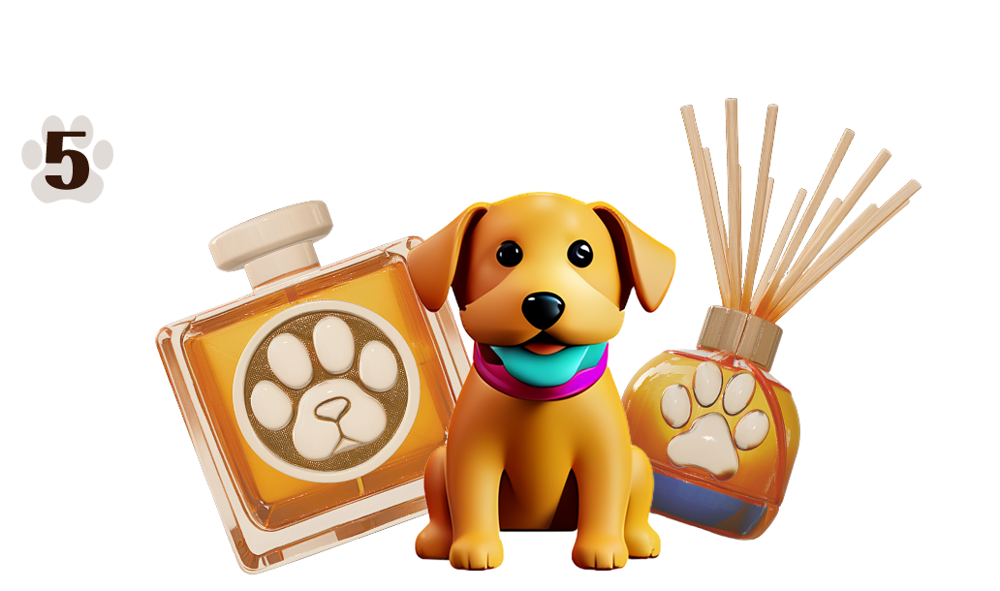
반송 후 제작 기간 대략 2주 소요
* 키트 신청서 예시
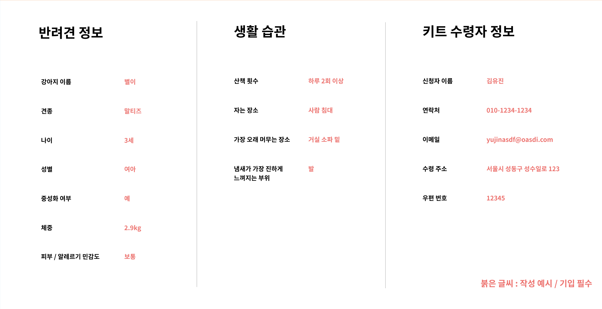
사고는 싶은데, 제작 과정도 귀찮고
기다리기도 귀찮으면 어떡하죠?
가장 일반적인 강아지 발냄새를 구현한,
Paw Scent 01
"강아지별 맞춤형 제작? 뭐 그정도까진 필요없고…
저는 그저 강아지 발냄새를 맡으며 릴렉스하고 싶을 뿐입니다."
그런 당신을 위해서, 가장 일반적이고 표준적인 강아지 발냄새를 구현해냈습니다.
맞춤형 제작 제품보다 더 낮은 가격과 빠른 배송의 'Paw Scent 01'을 만나보세요.
(12시 이전 주문 당일 배송)
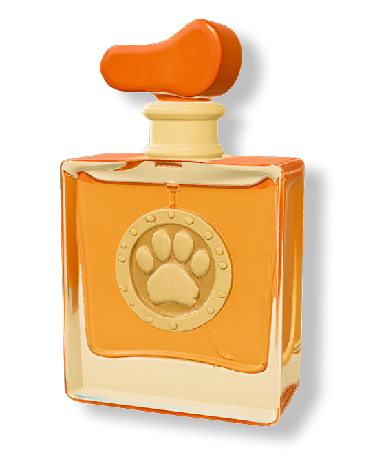
5천명 견주들의
검증을 받은
높은 싱크로율
견주들이라면 누구나 아는
그 구수한 옥수수 냄새,
5천명 견주들을 대상으로 한
검증 테스트 결과 만족도 99%
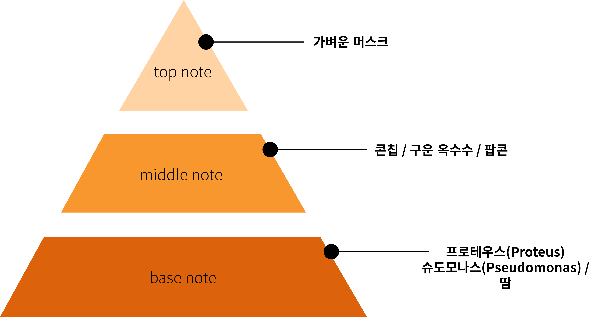
'Paw Scent 01'
노트
강아지 발냄새는 강아지 발바닥(패드)에 있는
땀샘과 자연적으로 존재하는 박테리아
(프로테우스와 슈도모나스)가 결합하면서
독특한 향을 냅니다. 'Paw Scent 01'은 이
박테리아와 땀을 베이스 노트로 활용하여
높은 싱크로율을 자랑합니다.
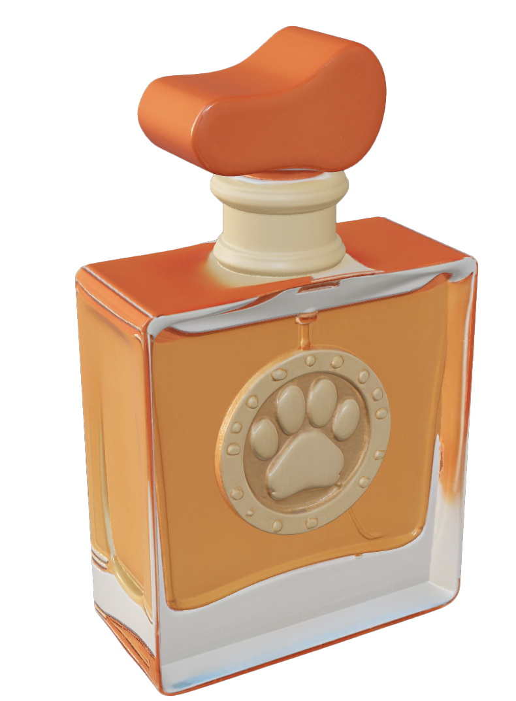
실제 구매자 분들이 남겨주신
생생한 후기
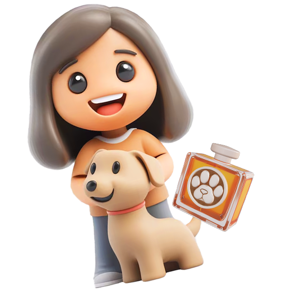
처음에 이 제품을 발견했을 때는 장난인 줄 알았어요. 진짜일 뿐만 아니라,
정말 전문적이고 정교하더군요.
우리 집 강아지 특유의 발냄새가 잘 살아있어서 만족합니다. 시도 때도 없이 사용하고 있어요!
– 맞춤 제작 향수 구매자 ajn******님의 후기
저는 강아지를 너무 사랑하지만 직접 키우기는
어려운 환경이에요. 강아지 발냄새를 그대로 담아낸
향수가 있다길래 한번 구매해 봤는데, 이 구수한 옥수수
냄새에 심각하게 중독되었습니다.
실제로 강아지를 키우는 기분이 들고,
이전보다 안정감도 느껴져요.
- Paw Scent 01 구매자 coe******님의 후기
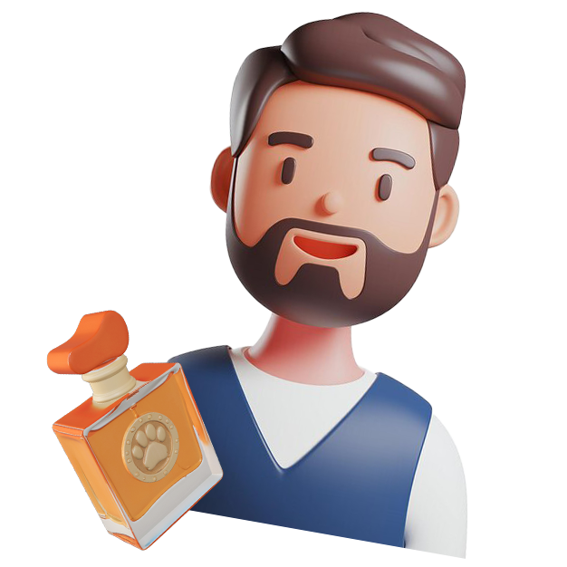